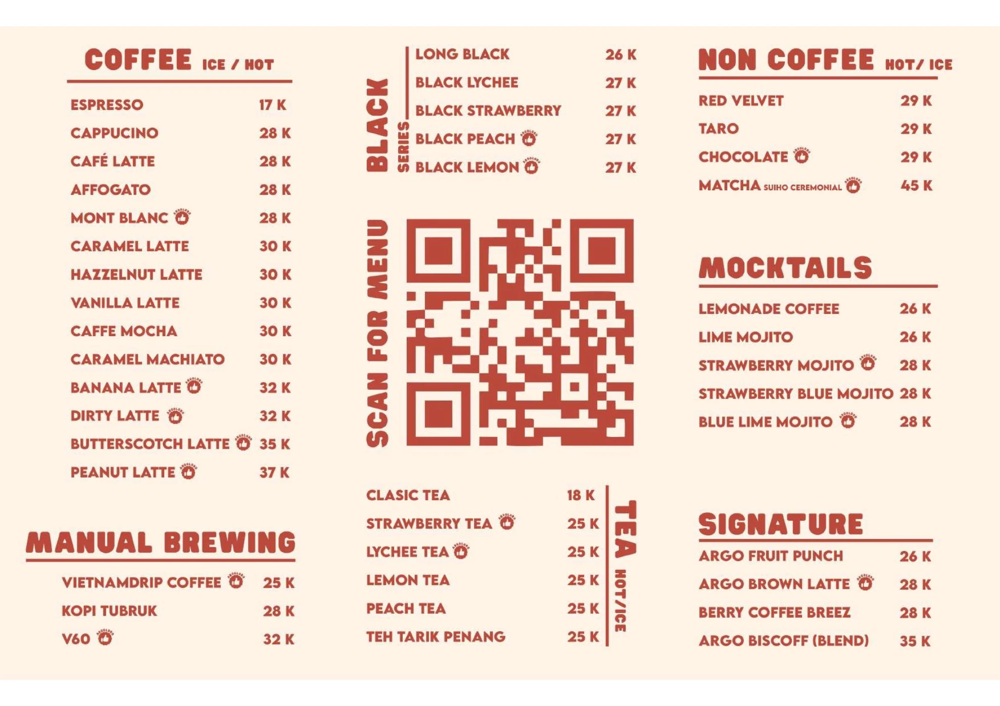
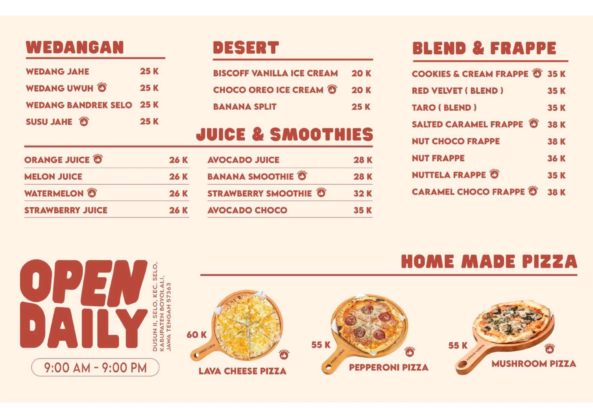
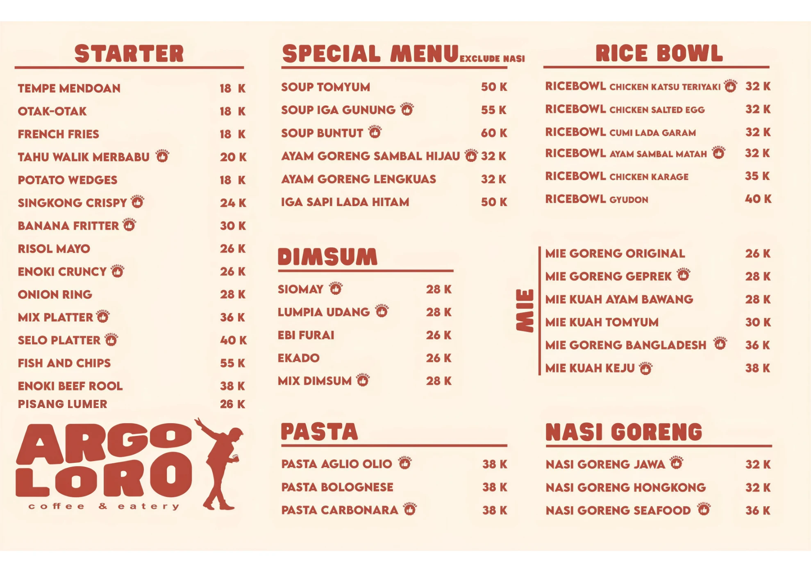

Menu tidak ditemukan.
Coba kata lain, atau tanyakan langsung lewat WhatsApp.
Harga dalam ribuan rupiah. Sewaktu-waktu dapat berubah — konfirmasi saat memesan.
Menu tidak ditemukan.
Coba kata lain, atau tanyakan langsung lewat WhatsApp.
Harga dalam ribuan rupiah. Sewaktu-waktu dapat berubah — konfirmasi saat memesan.
Ketuk gambar untuk membuka ukuran penuh — di sana bisa dicubit untuk zoom.



Harga di menu digital lebih mudah dicari dan selalu ikut pembaruan.